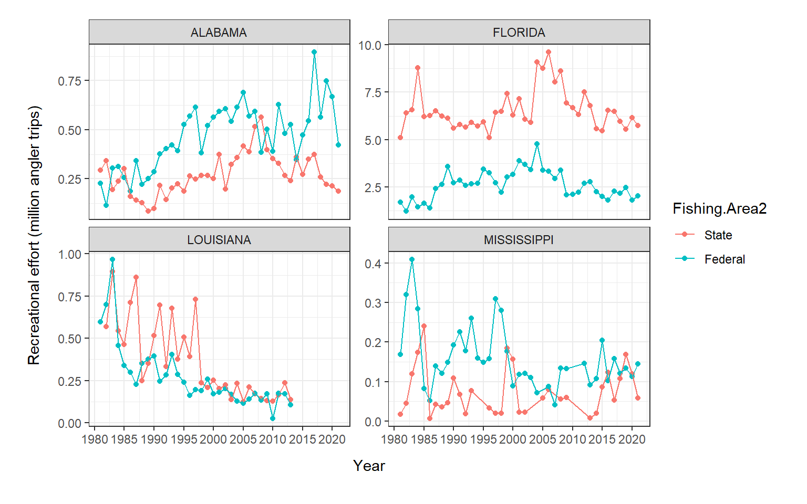

library(dplyr)1. Examine MRIP effort data
NOAA Red Snapper Participatory Modeling Project 2022
Trends in recreational fishing effort in the GOM paper
Load packages
Load MRIP effort data from online query tool
MRIP = read.csv("../../../NOAA Data/PUBLIC/PAPER_Rec-fishing-trends/Raw/MRIP query_effort_81_21_GOM by state_by mode_by area.csv")
MRIP$State = as.factor(MRIP$State)
MRIP$Fishing.Mode = as.factor(MRIP$Fishing.Mode)
MRIP$Fishing.Area = as.factor(MRIP$Fishing.Area)
summary(MRIP) Estimate.Status Year State Fishing.Mode
Length:1208 Min. :1981 ALABAMA :313 CHARTER BOAT :396
Class :character 1st Qu.:1990 FLORIDA :330 PARTY/CHARTER BOAT : 50
Mode :character Median :2000 LOUISIANA :262 PRIVATE/RENTAL BOAT:467
Mean :2000 MISSISSIPPI:303 SHORE :295
3rd Qu.:2010
Max. :2021
Fishing.Area Angler.Trips PSE
INLAND :449 Min. : 68 Min. : 3.80
OCEAN (<= 10 MI):123 1st Qu.: 40246 1st Qu.: 8.90
OCEAN (<= 3 MI) :325 Median : 283380 Median : 14.90
OCEAN (> 10 MI) : 82 Mean : 1673640 Mean : 21.48
OCEAN (> 3 MI) :229 3rd Qu.: 1823299 3rd Qu.: 26.65
Max. :14516430 Max. :114.10 The MRIP data is effort in angler trips for each GOM state by fishing area and by mode, 1981-2021
What are we really interested in? We want to know why recreational anglers fish. Charter and private anglers likely have different motivations. So let’s just look at private anglers. Since we are mainly concerned with red snapper, those fish are not being caught from shore. So we really just want the private/rental boat fishing mode. For fishing area, we probably want to remove inland.
MRIP2 = MRIP %>%
filter(Fishing.Mode == "PRIVATE/RENTAL BOAT") %>%
filter(Fishing.Area != "INLAND")
MRIP2 = droplevels(MRIP2)
summary(MRIP2) Estimate.Status Year State Fishing.Mode
Length:313 Min. :1981 ALABAMA :82 PRIVATE/RENTAL BOAT:313
Class :character 1st Qu.:1990 FLORIDA :83
Mode :character Median :2000 LOUISIANA :66
Mean :2000 MISSISSIPPI:82
3rd Qu.:2010
Max. :2021
Fishing.Area Angler.Trips PSE
OCEAN (<= 10 MI): 41 Min. : 3256 Min. : 4.70
OCEAN (<= 3 MI) :116 1st Qu.: 145949 1st Qu.: 10.90
OCEAN (> 10 MI) : 41 Median : 309571 Median : 16.60
OCEAN (> 3 MI) :115 Mean :1395997 Mean : 19.34
3rd Qu.:1655300 3rd Qu.: 23.30
Max. :9617976 Max. :101.50 MRIP2$Fishing.Area2 = as.factor(MRIP2$Fishing.Area)
levels(MRIP2$Fishing.Area2) = list("State" = c("OCEAN (<= 10 MI)", "OCEAN (<= 3 MI)"),
"Federal" = c("OCEAN (> 10 MI)", "OCEAN (> 3 MI)"))
#Remove data points with PSE > 50
library(dplyr)
MRIP2 = MRIP2 %>%
filter(PSE < 50)
# Plot everything
MRIP2$effort2 = MRIP2$Angler.Trips/1000000
library(ggplot2)
ggplot(MRIP2, aes(x=Year, y=effort2, colour=Fishing.Area2)) +
geom_point() +
geom_line() +
facet_wrap(.~State, scales="free_y") +
theme_bw() +
labs(x="Year", y="Recreational effort (million angler trips)") +
scale_x_continuous(breaks=seq(1980,2021,5)) +
#scale_y_continuous(breaks=seq(0,20,1)) +
theme(axis.title.x = element_text(vjust=-2),
axis.title.y = element_text(vjust=5)) +
theme(plot.margin = unit(c(0.5,0.8,1,1), "cm"))